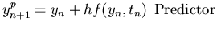
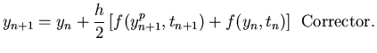

Next: IVP with Systems of
Up: Higher Order Methods
Previous: Adams Methods
The idea behind the predictor-corrector methods is to use a suitable combination of an explicit and an implicit
technique to obtain a method with better convergence characteristics. The combination
of the FE and the AM2 methods is employed often. Here, we use the FE as a predictor equation to get ypn+1 and subsequently use
the AM2 as a corrector equation to get the final computed solution yn+1. The method,
referred to as the Euler-Trapezoidal method is given below.
| |
|
 |
|
| |
|
 |
(24) |
Note that in the second (corrector) step, the implicit term for the AM2,
f(yn+1,tn+1) is replaced with
f(ypn+1,tn+1), i.e., the value of f evaluated at the predicted ypn+1 is used. Hence, the predictor-corrector
method described above is an explicit method.
Exercise Problem
Consider the IVP
Write C programs to compute y(t) in the interval [0,2] using (a). the forward Euler method
(b) the AB2 method (c). the Euler-Trapezoidal (predictor-corrector) method and (d). the RK4 method.
Plot your numerically computed solutions with h=0.1 along with the exact solution y=1/(1+t).
Compare the convergence properties of each one of the above methods by plotting the absolute error
for y(2) for h=0.001, 0.01 and 0.1. How do the stability characteristics of these methods
compare with one another?
Next: IVP with Systems of
Up: Higher Order Methods
Previous: Adams Methods
Michael Zeltkevic
1998-04-15